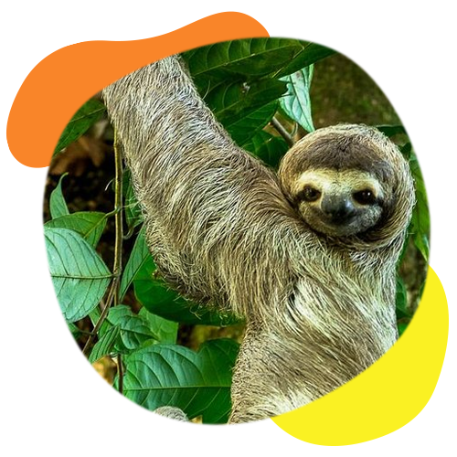

Desarrollo Ambiental
Comprometidos por un mundo mejor
Con la finalidad de cumplir con lo establecido en el reglamento a la Ley de Gestión Integral de Residuos (8839), así como a lo indicado en el informe DFOE-AE-IF-003-2013 de la Contraloría General de la República y en los Decretos Ejecutivos 36499-S-MINAET, además de mantener el compromiso ambiental de la Municipalidad de Quepos.
Este plan es un instrumento de planificación que le permite al municipio, ejecutar acciones enfocadas a cumplir con la normativa nacional referente al tema del ahorro y el uso eficiente de energía, cambio climático y gestión ambiental institucional.
